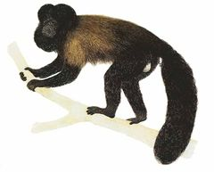
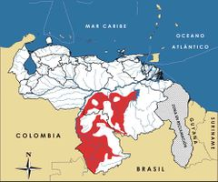

Chiropotes chiropotes
| Mono barbudo | |
|---|---|
|  | |
| Riesgo de extinción | |
 Datos insuficientes (UICN) | |
| Clasificación científica | |
| Reino: | Animalia |
| Filo: | Chordata |
| Clase: | Mammalia |
| Orden: | Primates |
| Familia: | Pitheciidae |
| Género: | Chiropotes |
| Especie: | Chiropotes israelita |
| Nombre binomial | |
|
Chiropotes israelita Spix, 1823 | |
| Distribución | |
|
 Mapa de distribución de Chiropotes israelita | |
Contenido
Información de Evaluación
- Categoría y Criterio Regional: Datos Insuficientes (DD)
- Fecha de Evaluación Regional: 2015
- Evaluadores: Jesús Morales-Campos y Ariany García-Rawlins
- Categoría y Criterio Global: Preocupación Menor (LC)
Justificación
Evaluaciones Previas
1999: Vulnerable (VU)
2008: Vulnerable A2d (VU)
Información General
Nombres comunes
Mono barbudo, Mono capuchino, Mono capuchino del Orinoco Brownbacked bearded saki, Bearded saki
Notas taxonómicas
Sinónimos
Descripción
Mono de tamaño mediano que mide entre 42 y 45 cm de longitud cabezacuerpo, y cuya cola no prensil alcanza hasta 40 cm de largo. Su peso oscila entre 2 y 4 kg. La coloración dorsal de su pelaje es amarillenta olivácea, la cabeza es negra con dos copetes (más pronunciados en el macho), el rostro desnudo es de color negro o gris negruzco, y tiene un vientre de piel muy pigmentada y cubierto de pelos negros uniformes. Se caracteriza por sus grandes colmillos y su mandíbula fuerte. Forma tropas numerosas de hasta 30 individuos, lideradas por uno o varios machos dominantes. De hábitos diurnos, arbóreos y gregarios (multiparejas), su dieta se compone sobre todo de frutas, semillas y pequeños insectos.
Distribución
Especie restringida a Brasil y Venezuela, específicamente al noreste de la cuenca amazónica, en un área limitada al sur por el río Amazonas [1,2]. En Venezuela se distribuye localmente en los estados Bolívar y Amazonas, en las cuencas de los ríos Caura, alto Ventuari y alto Orinoco, donde habita en bosques húmedos de tierras bajas a altitudes que oscilan entre 130 y 200 m. La taxonomía de esta especie ha sido objeto de discusión, ya que en Venezuela la única especie conocida de este género amazónico era referida como Chiropotes satanas . Sin embargo, una revisión reciente del género realizada en Brasil, basada en la morfología, los cariotipos y la genética molecular, reveló que los taxa tratados como subespecies o sinónimos, eran especies plenas. Según este estudio, la especie en el norte de Brasil y las regiones colindantes del sur de Venezuela es Chiropotes israelita, cuya localidad típica es río Negro, en Brasil. De conformidad con lo señalado, Chiropotes satanas sería una especie restringida al sur del río Amazonas, en Brasil oriental. Así mismo, dado que el análisis taxonómico referido está basado exclusivamente en material brasileño, es posible que en el sur de Venezuela se encuentren otras especies del mismo género, además de Chiropotes israelita.
- Sistema: Terrestre
- Bioregión:
- Intervalo altitudinal (m):
- Endémica: No
Situación
Los especialistas en Venezuela coinciden en que la situación de la especie en el país no es tan alarmante, en especial si se considera que una gran proporción de su área de distribución tiene un grado de perturbación relativamente bajo, por lo cual se podría estar sobreestimando la categoría de amenaza de esta especie. Sin embargo, su distribución localizada y su dependencia de hábitats prístinos la hacen muy sensible a las perturbaciones. Por otra parte, su cacería ha aumentado a lo largo de toda su área de distribución en los últimos años. A escala internacional la IUCN considera a la especie en la categoría Preocupación Menor, pese a su disminución poblacional, a la disminución de su área de ocupación y al reducido número de individuos que conforman sus poblaciones.
- EOO (km2): Temporalmente sin información
- AOO (km2): Temporalmente sin información
- Tendencia Poblacional: Estable
Amenazas
La cacería indiscriminada para obtener su carne y la captura para su uso como mascota son las principales amenazas que enfrenta la especie. Aunque prácticamente está ausente en la cercanía de poblados humanos, por su apariencia poco común y por su espesa pelambre, particularmente en la cara y en la cola, es muy cotizada como mascota. Sin embargo, hay que tener especial cuidado cuando se trate de cacería de subsistencia, porque nunca se conoce con exactitud su selectividad e intensidad, y ésta no puede ser controlada directamente por las autoridades competentes.
Conservación
En el ámbito internacional la especie ha sido incluida en el Apéndice II del CITES. En Venezuela los primates no figuran en el calendario cinegético publicado por el MINAMB, por lo cual su caza está prohibida. Entre otras medidas para su protección se incluye el Decreto N° 1.486 (11/09/96), donde es declarada Especie en Peligro de Extinción, aunque es referida como Chiropotes satanas. La distribución de la especie abarca algunas áreas protegidas. En virtud de que su principal amenaza es la cacería, sería necesario proponer otras alternativas alimentarias a las poblaciones humanas que aprovechan este recurso. Igualmente, se deben desarrollar campañas de sensibilización y concientización que involucren a cazadores, visitantes ocasionales (turistas) y entidades responsables de la vigilancia y guardería de los recursos naturales del sur del país.
Autorías
Autores originales
Colaboradores
Juhani Ojasti